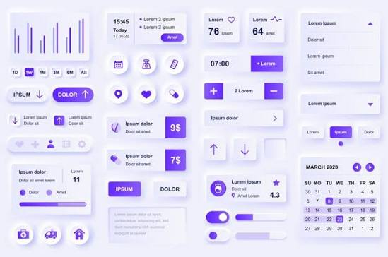

하루에 한번 UI 구성 훈련
UI 구성을 연습하고
자신감을 기릅니다.
로그인 화면, 상품 목록, 설정 페이지처럼 실제 서비스에서 자주 쓰는 화면을 미션으로 받아 직접 구성해 봅니다.
훈련 설정 시작하기지금은 훈련 조건만 설정하며 미션은 아직 시작되지 않습니다.

HOW IT WORKS
간단한 세 단계로 시작해요.
하루 한 번 UI 구성을 연습하려는 사람이 훈련 조건을 정하고 관리하는 흐름입니다.
-
01
화면 입력
오늘 연습할 화면과 훈련자 닉네임을 입력해요.
-
02
훈련 조건
미션 수를 고르고, 필요하면 난이도를 변경해요.
-
03
저장과 관리
훈련 설정을 보관하고 다시 열거나 취소해요.
NEW SESSION
UI 구성 훈련 설정
이전 단계로 돌아가도 입력한 내용은 유지됩니다.
- 1 화면
- 2 조건
- 3 확인
MY PRACTICE
내 훈련 기록 0
저장한 훈련 설정을 다시 열거나 취소할 수 있습니다. 내용은 이 브라우저에만 보관됩니다.